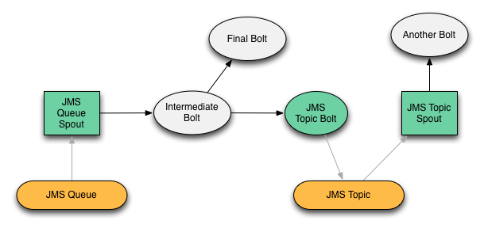

The storm-jms source code contains an example project (in the "examples" directory) builds a multi-bolt/multi-spout topology (depicted below) that uses the JMS Spout and JMS Bolt components.

The green components represent instances of the storm-jms components. White components represent
"standard" Storm bolts (in the example these bolts are instances of GenericBolt which simply logs
information about the tuples it receives and emits).
Grey arrows represent JMS messages, while black arrows represent the flow of Storm tuple objects.
The example is set up to be "transactional," meaning the JMS Spout will use Storm's guaranteed processing capabilities to determine if a JMS Message should be acknowledged. Each bolt in the topology will anchor to each tuple it receives. If every bolt successfully processes and acks each tuple in the chain, the original JMS Message will be acknowledged, and the underlying JMS implementation will not attempt re-delivery of the message. If a bolt fails to process/ack a tuple, the JMS message will not be acknowledged, and the JMS implementation will queue the message for redelivery.
The topology contains two chains: One originating from a JMS Spout connected to a Queue, and another originating from a JMS Spout connected to a Topic.
Chain #1
Chain #2
$ cd storm-jms
$ mvn clean install
The example uses ApacheMQ 5.4.0 for JMS. Download and install it from Apache ActiveMQ Downloads.
There is no specific configuration required, simply start ActiveMQ:
$ [ACTIVEMQ_HOME]/bin/activemq
Run the example topology from the examples directory:
$ mvn exec:java
When the topology runs, it will connect to ActiveMQ and the following JMS Destinations will be created:
backtype.storm.contrib.example.queue
backtype.storm.contrib.example.topic
To publish a message to the backtype.storm.contrib.example.queue queue:
backtupe.storm.example.queue queue entry.In the terminal you should see the following among the output:
DEBUG (backtype.storm.contrib.jms.bolt.JmsBolt:183) - Connecting JMS..
DEBUG (backtype.storm.contrib.jms.spout.JmsSpout:213) - sending tuple: ActiveMQTextMessage {commandId = 5, responseRequired = true, messageId = ID:budreau.home-51286-1321074044423-2:4:1:1:1, originalDestination = null, originalTransactionId = null, producerId = ID:budreau.home-51286-1321074044423-2:4:1:1, destination = queue://backtype.storm.contrib.example.queue, transactionId = null, expiration = 0, timestamp = 1321735055910, arrival = 0, brokerInTime = 1321735055910, brokerOutTime = 1321735055921, correlationId = , replyTo = null, persistent = true, type = , priority = 0, groupID = null, groupSequence = 0, targetConsumerId = null, compressed = false, userID = null, content = null, marshalledProperties = org.apache.activemq.util.ByteSequence@6c27ca12, dataStructure = null, redeliveryCounter = 0, size = 0, properties = {secret=880412b7-de71-45dd-8a80-8132589ccd22}, readOnlyProperties = true, readOnlyBody = true, droppable = false, text = Hello storm-jms!}
DEBUG (backtype.storm.contrib.jms.spout.JmsSpout:219) - Requested deliveryMode: CLIENT_ACKNOWLEDGE
DEBUG (backtype.storm.contrib.jms.spout.JmsSpout:220) - Our deliveryMode: CLIENT_ACKNOWLEDGE
DEBUG (backtype.storm.contrib.jms.spout.JmsSpout:224) - Requesting acks.
DEBUG (backtype.storm.contrib.jms.example.GenericBolt:60) - [INTERMEDIATE_BOLT] Received message: source: 1:10, stream: 1, id: {-7100026097570233628=-7100026097570233628}, [Hello storm-jms!]
DEBUG (backtype.storm.contrib.jms.example.GenericBolt:66) - [INTERMEDIATE_BOLT] emitting: source: 1:10, stream: 1, id: {-7100026097570233628=-7100026097570233628}, [Hello storm-jms!]
DEBUG (backtype.storm.contrib.jms.example.GenericBolt:75) - [INTERMEDIATE_BOLT] ACKing tuple: source: 1:10, stream: 1, id: {-7100026097570233628=-7100026097570233628}, [Hello storm-jms!]
DEBUG (backtype.storm.contrib.jms.bolt.JmsBolt:136) - Tuple received. Sending JMS message.
DEBUG (backtype.storm.contrib.jms.example.GenericBolt:60) - [FINAL_BOLT] Received message: source: 2:2, stream: 1, id: {-7100026097570233628=-5393763013502927792}, [Hello storm-jms!]
DEBUG (backtype.storm.contrib.jms.example.GenericBolt:75) - [FINAL_BOLT] ACKing tuple: source: 2:2, stream: 1, id: {-7100026097570233628=-5393763013502927792}, [Hello storm-jms!]
DEBUG (backtype.storm.contrib.jms.bolt.JmsBolt:144) - ACKing tuple: source: 2:2, stream: 1, id: {-7100026097570233628=-9118586029611278300}, [Hello storm-jms!]
DEBUG (backtype.storm.contrib.jms.spout.JmsSpout:251) - JMS Message acked: ID:budreau.home-51286-1321074044423-2:4:1:1:1
DEBUG (backtype.storm.contrib.jms.spout.JmsSpout:213) - sending tuple: ActiveMQTextMessage {commandId = 5, responseRequired = true, messageId = ID:budreau.home-60117-1321735025796-0:0:1:1:1, originalDestination = null, originalTransactionId = null, producerId = ID:budreau.home-60117-1321735025796-0:0:1:1, destination = topic://backtype.storm.contrib.example.topic, transactionId = null, expiration = 0, timestamp = 1321735056258, arrival = 0, brokerInTime = 1321735056260, brokerOutTime = 1321735056260, correlationId = null, replyTo = null, persistent = true, type = null, priority = 4, groupID = null, groupSequence = 0, targetConsumerId = null, compressed = false, userID = null, content = null, marshalledProperties = null, dataStructure = null, redeliveryCounter = 0, size = 0, properties = null, readOnlyProperties = true, readOnlyBody = true, droppable = false, text = source: 2:2, stream: 1, id: {-710002609757023... storm-jms!]}
DEBUG (backtype.storm.contrib.jms.spout.JmsSpout:219) - Requested deliveryMode: CLIENT_ACKNOWLEDGE
DEBUG (backtype.storm.contrib.jms.spout.JmsSpout:220) - Our deliveryMode: CLIENT_ACKNOWLEDGE
DEBUG (backtype.storm.contrib.jms.spout.JmsSpout:224) - Requesting acks.
DEBUG (backtype.storm.contrib.jms.example.GenericBolt:60) - [ANOTHER_BOLT] Received message: source: 5:9, stream: 1, id: {-5117078009445186058=-5117078009445186058}, [source: 2:2, stream: 1, id: {-7100026097570233628=-9118586029611278300}, [Hello storm-jms!]]
DEBUG (backtype.storm.contrib.jms.example.GenericBolt:75) - [ANOTHER_BOLT] ACKing tuple: source: 5:9, stream: 1, id: {-5117078009445186058=-5117078009445186058}, [source: 2:2, stream: 1, id: {-7100026097570233628=-9118586029611278300}, [Hello storm-jms!]]
DEBUG (backtype.storm.contrib.jms.spout.JmsSpout:251) - JMS Message acked: ID:budreau.home-60117-1321735025796-0:0:1:1:1
The topology will run for 2 minutes, then gracefully shut down.